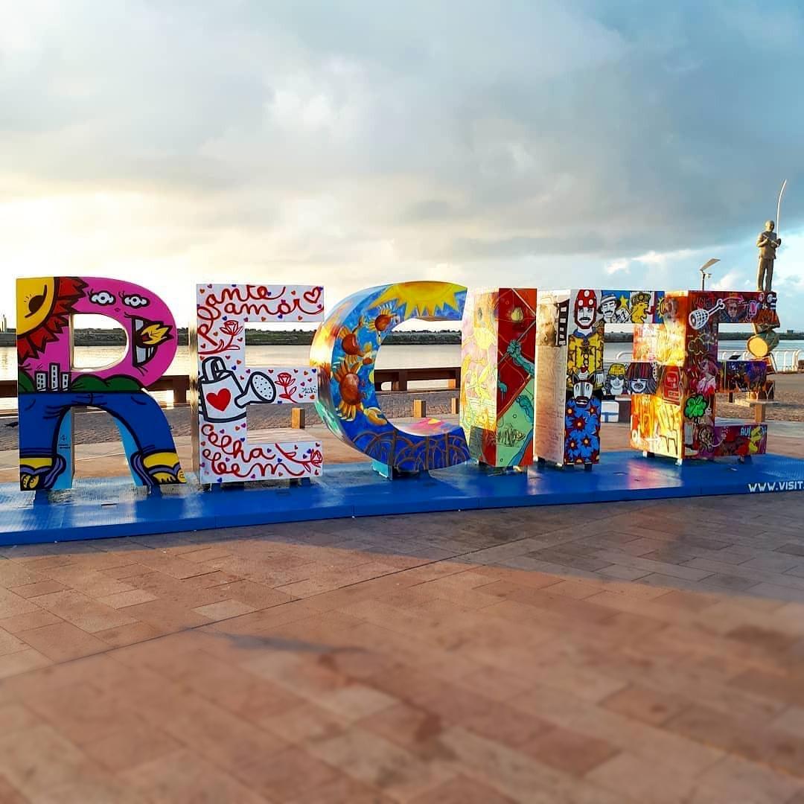
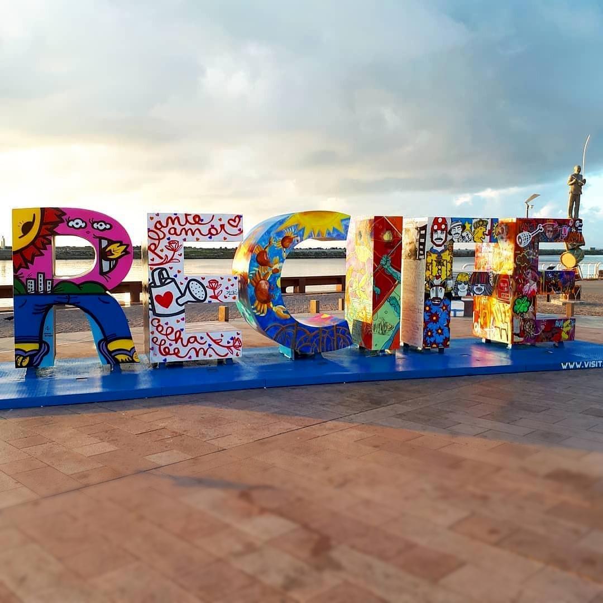

Sobre
O local fica próximo ao Porto do Recife e abriga o Marco Zero da cidade do Recife (instalado em 31 de janeiro de 1938, pelo Automóvel Clube de Pernambuco). É deste marco que são feitas todas as medidas oficiais de distâncias rodoviárias locais. Oficialmente denominada de Praça Barão do Rio Branco, fica localizada na Av. Alfredo Lisboa conectada às ruas Marquês de Olinda, Rio Branco e Barbosa Lima.[1][2]
Além do Marco Zero, existe na praça um busto do Barão do Rio Branco, escultura do francês Félix Charpeutier, colocada ali em 1917, em bronze com uma altura de 2,5m e foi inaugurada, sob um pedestal em pedra de 4,20m, esculpido por Corbiniano Vilaça, em 19 de agosto do mesmo ano. Dando a obra uma altura de 7m.
O norte da praça é banhado pelo estuário do porto do Recife, formado pelo Rio Capibaribe. O estuário é protegido por um dique natural, local em que se encontra o Parque das Esculturas com a famosa obra Coluna de Cristal de 32 metros de altura e inspirada em uma flor descoberta por Burle Marx e varias outras obras em cerâmica do artista Francisco Brennand. No dique encontra-se também a Casa de Banhos, que não existe mais, e o Farol do Recife. O dique tem uma extensão 4km de comprimento e começa no bairro de Brasília.
História
No início do século passado, o centro do Recife passou por drásticas reformas, com projetos de higienização urbana e melhoramento das condições do Porto do Recife. Na prática, a higienização social se traduziu em desapropriações de pelo menos 480 imóveis que foram demolidos para a abertura das três novas avenidas no Bairro.[3] Em um relato de Mário Sette podemos ter uma descrição do caso:
"Pouco a pouco desaparecia aos olhos não um bairro, mas um cenário de milhares de criaturas no seu presente e no seu passado. [...] e o Corpo Santo também se desmanchava [...] Poucos falariam ainda desse burgo onde Recife nascera, tão enviesado de ruas e ruelas [...] tudo no chão. Nunca se vira uma loucura assim".
Com esta grande reforma, profundas modificações foram feitas no bairro e na praça, como a demolição da Matriz do Corpo Santo e a abertura de novas e largas avenidas. No local onde estava a igreja, está edificado o edifício Maurício de Nassau, de características modernas e fachadas em vidro. Ao seu lado foram construídos os prédios da Associação Comercial de Pernambuco e a Bolsa de Valores. Estes dois prédios apresentam, em sua arquitetura, nítida influência francesa que se caracteriza pela mistura de diversos elementos construtivos, além do armazém 10 e 12 que serviam ao porto do Recife para estoque de açúcar. Estes prédios, hoje, abrigam a sede do Grupo Industrial João Santos, o Santander Cultural, a Associação Comercial de Pernambuco, a Caixa Cultural e o Centro de Artesanato de Pernambuco, considerado o maior do segmento no Brasil.
Em 1999 a praça que existia no local recebeu severas modificações. O busto do Barão do Rio Branco e o Marco Zero foram realocados para a borda da praça. A "nova praça" foi projetada pelo pintor Cícero Dias, em 1999. No seu centro se encontra uma enorme obra de arte feita por ele. Inspirado em sua obra Eu vi o mundo e ele começava no Recife, criou um grande circulo com uma Rosa dos Ventos no centro. A obra tem em média 10m de raio.[1][2][6]
Atualmente serve como ponto de encontro de jovens, desportistas, artistas, turistas e moradores da cidade. Além de ser palco de comemorações e apresentações artísticas.
 
